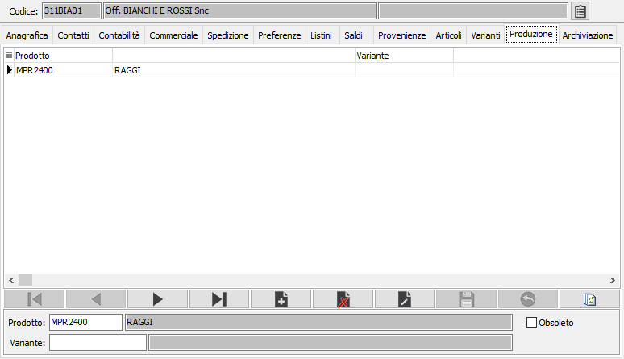

Produzione
La sezione è visibile solo in presenza del modulo Produzione, visualizza e consente l'inserimento dei materiali forniti direttamente dal fornitore attivo; in fase di generazione ODL il componente se risulta fornito dal terzista non viene considerato ne per il calcolo delle RDA ne per il calcolo dei costi MP. Analogamente il fornitore è presente sull'anagrafica dell'articolo nella sezione Materiali Terzisti della pagina Produzione.
